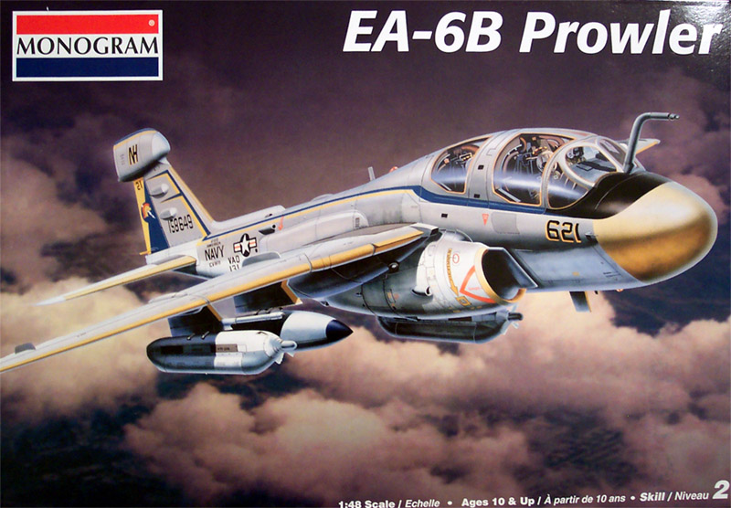
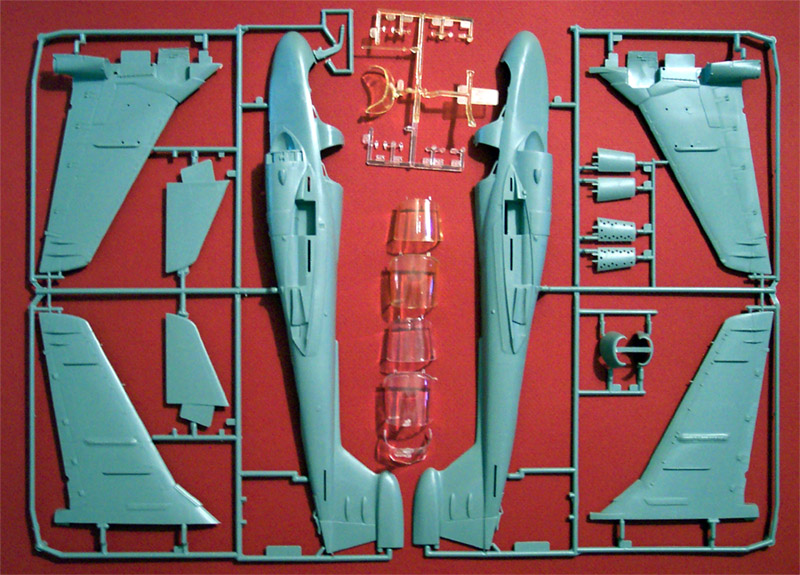
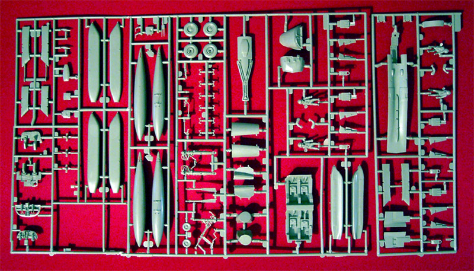
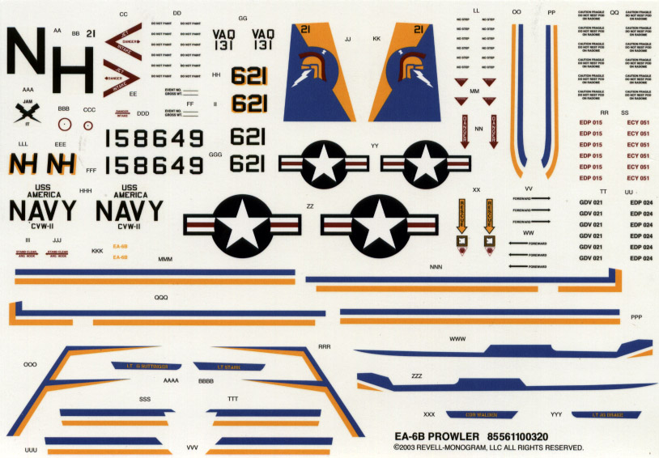

{kind=link}
{kind=link}
{kind=link}



Images and text Copyright � 2003 by Matt Swan
Developmental History
������ The EA-6B Prowler, manufactured by Northrop Grumman Systems Corporation, provides an umbrella of protection for strike aircraft, ground troops and ships by jamming enemy radar, electronic data links and communications. The EA-6B Prowler is included in every aircraft carrier deployment. The primary mission of the EA-6B Prowler is Suppression of Enemy Air Defenses in support of strike aircraft and ground troops by interrupting enemy electronic activity and obtaining tactical electronic intelligence within the combat area. The Prowler is a long-range, all-weather aircraft with advanced electronic countermeasures capability. Manufactured by the Northrop Grumman Systems Corporation, it is a twin-engine, mid-wing configured aircraft that has a side by-side cockpit arrangement. The EA-6B war fighting systems includes the ALQ-99 on board receiver; the ALQ-99 pod mounted jamming system, the USQ-113 communications jamming system and the HARM missile. As a result of restructuring DoD assets in 1995, the EF-111 Raven was retired, and the EA-6B was left as the only radar jammer in DoD.
������ The Prowler is derived from the two-seater A-6 Intruder attack aircraft. The basic airframe was stretched and strengthened to accommodate a four-seat cockpit. Another distinguishing feature is the pod-shaped fairing at the top of the vertical fin. The crew of the Prowler consists of the pilot and three electronic countermeasures officers (ECMOs). The ALQ-99 jammers are operated by the two ECMOs in the aft cockpit. The ECMO in the right front seat is responsible for navigation, communications, and defensive electronic countermeasures.
������ The first EA-6B was flown May 25, 1968 and the aircraft was received by the Navy at NAS Whidbey Island, Washington in January 1971 and deployed to Vietnam in 1972. The Prowler features two Pratt & Whitney J52-P408 engines generating 10,400 pounds of thrust each giving it a maximum speed at sea level: 651 mph, a cruising speed of 481 mph and a service ceiling of 38,000 feet. There are currently 20 aircraft in the Marine inventory comprising four active squadrons with 120 aircraft in the total inventory.
The Kit
������ If you want to build a 1/48 scale EA-6B Prowler this is probably the best place to start. Built right out of the box with no aftermarket additions this would probably build into an acceptable kit for the average modeler. This kit is a reissue of the original 1992 offering and features both raised and recessed panel lines, two sets of transparent parts; 1 clear and 1 yellow. The kit instructions call for the yellow primary canopies to be used along with the clear front windshield. Personally, I would rather tint some Future for the clear parts and discard the kit yellow parts. Although the kit comes in a large reinforced box there is not that much in the line of parts and packing definitely leaves something to be desired. Neither set of transparent parts was bagged but simply loose in the box. On mine the back yellow canopy had broken free from the sprue and had torn the plastic in the process effectively ruining the part.
����� The kit consists of 114 parts molded in medium gray plastic and 22 transparent parts, half of them clear and half of them yellow. The overall appearance of the individual parts is good with fine raised lines for various access panels. The flaps and leading edge slats are all molded in the closed position. The kit includes four seated crew figures, three ECM pods and two drop-tanks. I removed the main fuselage pieces and checked them for fit, which was only fair at best. The top area behind the cockpit has some ugly mold lines and looks like it will require some serious putty. The wing halves fit together well but when placed into the fuselage the fit at the front of the wing to the lower body was poor. The instructions consist of an eight-page booklet that includes a general history of the aircraft and a single sheet of decal placement instructions.


Click on the images for larger pictures

����� The decals are one of the nicer aspects of this kit. These are all new decals to represent an EA-6B assigned to VAQ-131 when that squadron operated aboard the USS AMERICA, CV-66. The registry appears to be right on the mark and the color density appears to be very good. Although there are plenty of stencils included on the sheet there are no wing walks.
Conclusions
����� As I said earlier, this kit is a good place to start. I feel that all the ejection seats could use to be replaced and would recommend either a new Black Box interior (hint, hint) or at least a set of Verlinden GREA-7 replacement seats. A set of Paragon flaps and slats would be a big help also. Unfortunately neither of these accessories are readily available right now. Paragon, as many of you know, has gone out of business and the old BB cockpit sets are only available on E-bay and rarely at that. Verlinden GREA-7 seats are still available from various model shops. CAM decals has several alternative sheets available for this model.
����� Ultimately, this can be a respectable kit build �Out Of Box� or the truly serious modeler can really go to town dressing this baby up. I, of course, already have my CAM decals ordered and am looking for those dress-up accessories, happy modeling!
Accessory update, 10/13/03
������ I have just learned that in January 2004 Black Box will be releasing a
NEW
cockpit set that will include a wing fold set and several (at this time) unidentified correction pieces. No pricing has been released yet.
Accessory update, 6/3/05
At last it has arrived, over a year behind schedule the new and improved
EA-6B Prowler Pit from V.M.D. Studios is finally here and the review is availible if you just follow the link.
Kit update, 11/28/08
Stevens International commissioned a limited reissue of the kit from Revell which became availible from internet hobby shops as of 11/28/08, the kit number changed from 5611 to 5619. Nothing seems to have changed since the last release. Previous experience with this kind of release indicates the kit will be availible for about six months then disappear from store inventories. Over the preceding five years since the 2003 release we have seen prices on E-Bay steadily climb to around the hundred dollar mark and now are crashing. Will this pattern repeat? Only time will tell.
Current Squadron Breakdown:
VAQ-128 Fighting Phoenix (Expeditionary)
VAQ-129 Vikings (Training)
VAQ-130 Zappers
VAQ-131 Lancers
VAQ-132 Scorpions
VAQ-133 Wizards (Expeditionary)
VAQ-134 Garudas (Expeditionary)
VAQ-135 Black Ravens
VAQ-136 Gauntlets
VAQ-137 Rooks
VAO-138 Yellowjackets
VAQ-139 Cougars
VAO-140 Patriots
VAO-141 Shadowhawks
VAQ-142 Gray Wolves (Expeditionary)
VAQ-143 Cobras
VAQ-144
VAQ-196
VMAQ-1 Banshees
VMAQ-2 Panthers [ex-Playboys]
VMAQ-3 Moon Dogs
VMAQ-4 Seahawks